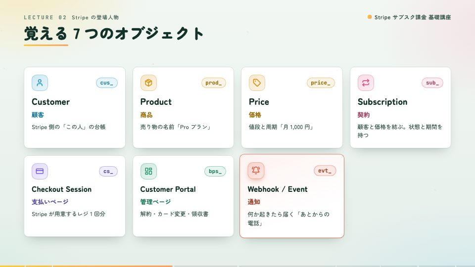
Chalkfile theme: 'chalkfile'
明るい教室の黒板を裏返した配色。文字は黒板の緑、色はチョーク、コードだけ黒板の面に書く。角の丸いゴシック。
台本をコードで書くと、ナレーション付きの講座動画と講座サイトができあがります。
TypeScript の台本から、VOICEVOX の声と Remotion の動画、動画・台本・字幕・確認クイズの講座サイトまでをコマンドで作ります。台本を直せば、何度でも作り直せます。
{
kind: 'concepts',
heading: '覚える 7 つのオブジェクト',
columns: 4,
cards: [
{ key: 'customer', en: 'Customer', ja: '顧客', … },
{ key: 'product', en: 'Product', ja: '商品', … },
{ key: 'price', en: 'Price', ja: '価格', … },
{ key: 'subscription', en: 'Subscription', ja: '契約', … },
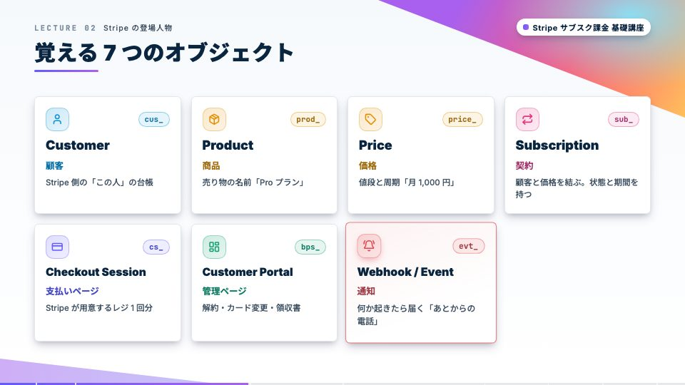
講座ごとに、動画と講座サイトがひとそろいでできます。
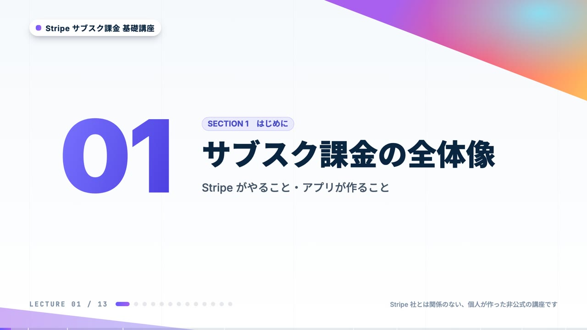
Stripe のサブスク課金を、概念からサンプル実装まで
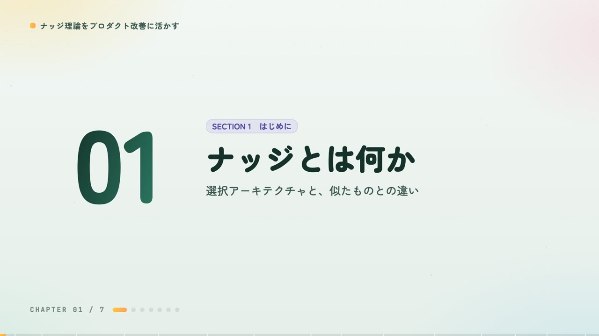
選ぶ自由を守る 行動デザインを、自分のサービスで
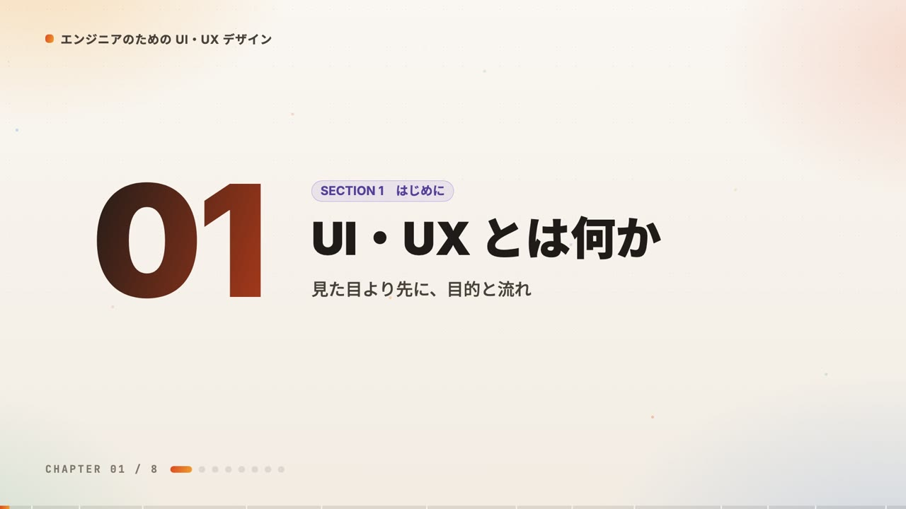
目的と流れ から、画面を直せるエンジニアになる
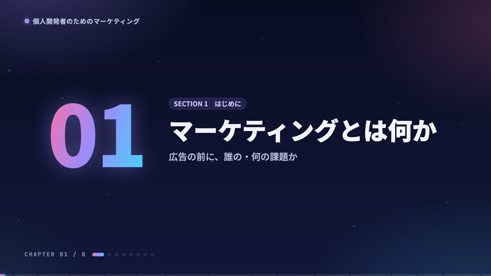
広告の前に、誰の何の課題かから始める
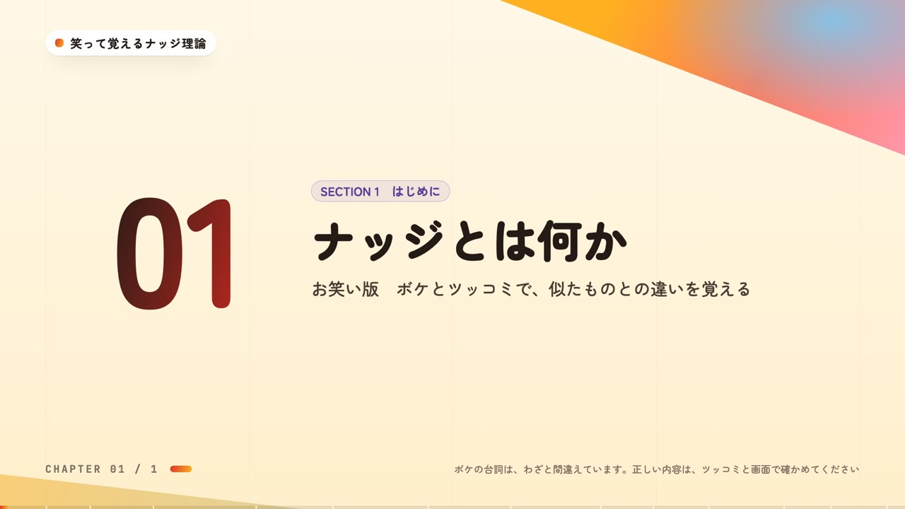
笑った瞬間が、わかった瞬間
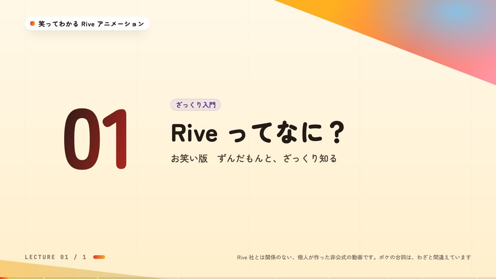
動きを作って、そのまま動かす道具を、ざっくり
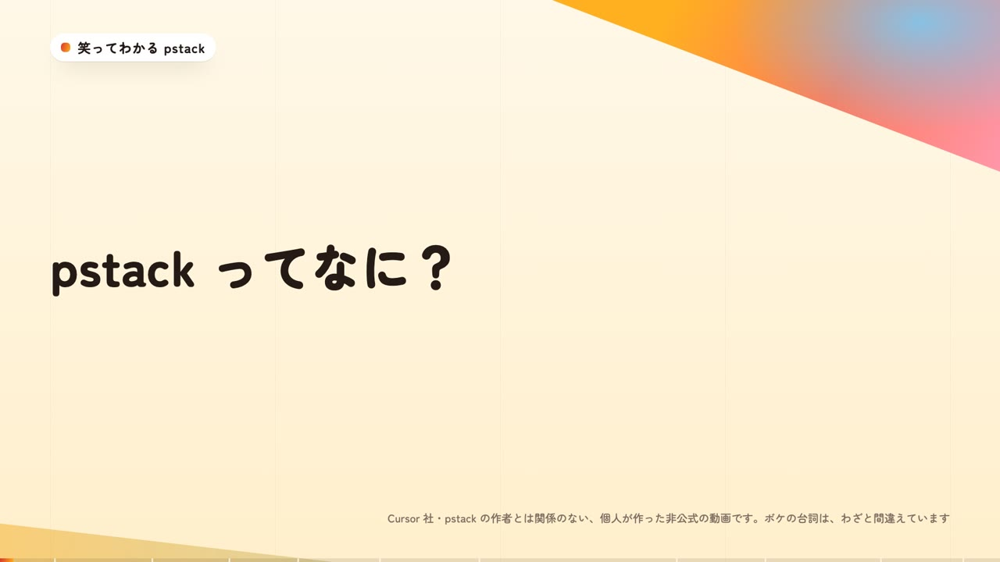
速く進みたいなら、まず深くのスキル集
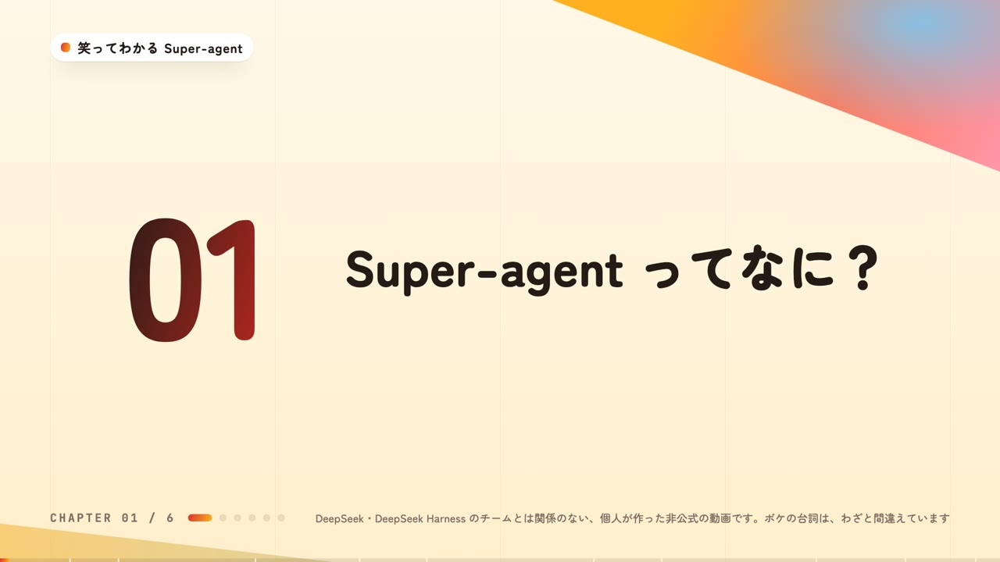
人の注意を、ボトルネックにしないエージェントの設計
色・書体・背景の飾りをテーマとしてまとめてあります。講座にテーマを 1 行書くと、動画もサイトもそのテーマで作られます。下は同じ場面を 3 つのテーマで描いたものです。

theme: 'chalkfile'明るい教室の黒板を裏返した配色。文字は黒板の緑、色はチョーク、コードだけ黒板の面に書く。角の丸いゴシック。

theme: 'indigo'白い地に紺の文字、紫の主役の色、角を斜めに切るグラデーションの帯。英字は Inter。
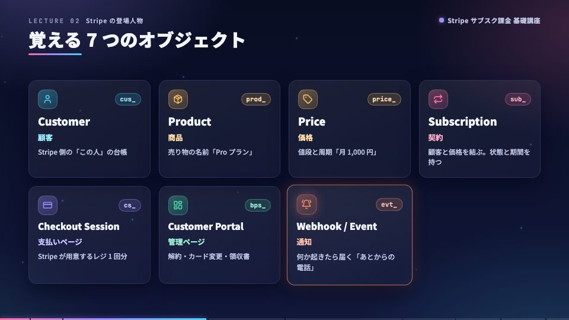
theme: 'night'最初の版の暗いテーマ。濃紺の地に、ピンクから水色のグラデーションと光の粒。
theme: 'paper'生成りの紙のような地に、黒に近い文字と朱色の主役の色。方眼の点。英字は Inter。
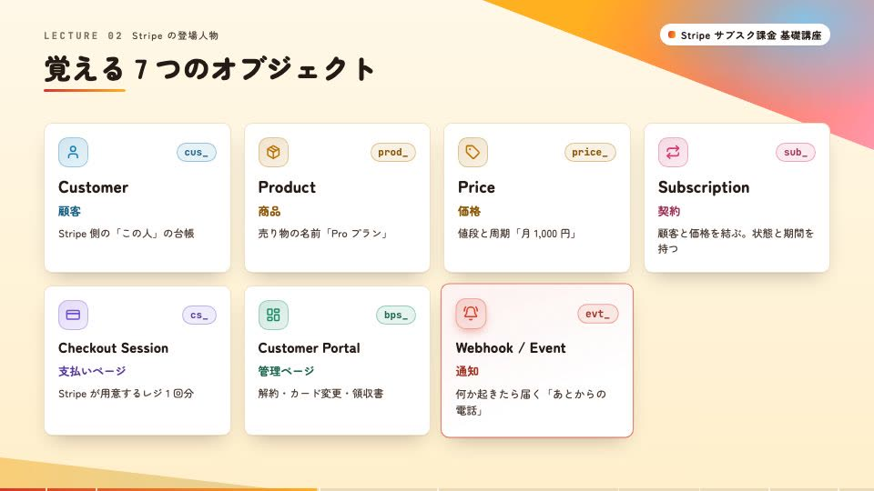
theme: 'stage'お笑いの舞台のような配色。クリームの地に黒に近い文字、幕の赤と照明の黄色の帯。角の丸いゴシック。
調べ方、画面と話し方の決まり、テーマの作り方は Claude Code のスキルにまとめてあります。
保存状態を確認しています…
保存サイズを確認しています…
保存機能を準備しています…
講座を開き、保存ボタンで選んでください。表示するだけでは動画を保存しません。
保存容量を確認しています…
アプリ内保存には、台本・字幕・クイズ・全動画を含みます。公式ドキュメントなど外部リンクには通信が必要です。オンライン再生や「動画ファイルをダウンロード」はアプリ内保存にはなりません。
保存中は画面を開いておいてください。通信やアプリが途切れた場合は、保存状態を確認して再試行できます。更新は手動です。更新失敗時は前の完全な版を維持し、成功時は直前の版も1つ保持します。更新には新しい版の分の空き容量が必要です。
iPhone・iPadでもブラウザの保存領域を使います。「ファイル」アプリの動画をこのアプリに取り込む機能はありません。ブラウザとホーム画面のアプリで保存が共有されるとは限らないため、使う方で保存し、機内モードで起動・再生を確かめてください。空き容量、長期間の未使用、サイトデータの削除などで保存が消える場合があります。実機での保存維持やバックグラウンド保存は保証しません。
対応ブラウザではインストールボタン、またはブラウザのメニューから追加できます。インストールだけでは動画は保存されません。
iPhone・iPad：Safari の共有メニューで「ホーム画面に追加」を選びます。表示される場合は「Webアプリとして開く」を有効にして追加してください。
アプリの更新があります。保存が終わってから、このサイトのタブをすべて閉じて開き直してください。完全な講座の保存は維持します。